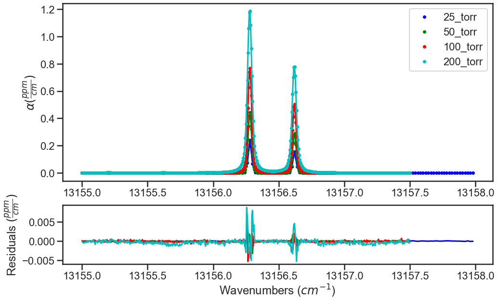
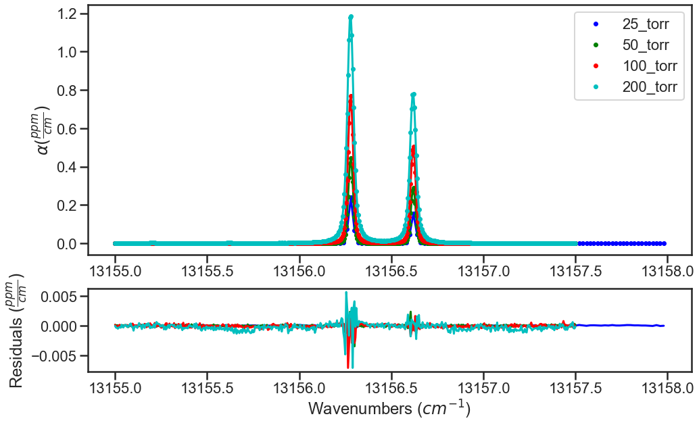

Fitting Synthetic Spectra¶
Provided in the MATS v2 release are several examples highlighting MATS capabilities, which can be found in the MATS examples folder.
This example simulates and fits Oxygen A-Band spectra
Import Modules and Set-Up¶
This example starts with importing modules and setting up file locations
import numpy as np
import pandas as pd
import os
import matplotlib.pyplot as plt
from matplotlib import gridspec
import MATS
Optional import of seaborn package for figure generation
import seaborn as sns
sns.set_style("whitegrid")
sns.set_style("ticks")
sns.set_context("poster")
If you aren’t using the MATS file strucutre, change the path to the working directory that contains experimental spectra or to the folder that you want to work in.
os.chdir(path)
Simulate Spectra¶
If you are simulating spectra, opposed to reading them in from a file as discussed above, then you can use the simulate_spectrum() function.
When simulating spectra, the first step is to read in the reference line list. This file can be generated following the Generating Parameter Line lists and read in using pd.read_csv function. The following code reads in the reference line list using the py:func:LoadLineListData function to read in the line list provided for the Oxygen A-Band.
from MATS.linelistdata import linelistdata
PARAM_LINELIST = linelistdata['O2_ABand_Drouin_2017_linelist']
Just as you would do if reading in the experimental spectrum, this example defines some common simulation and fit variables. In addition to variables that would be used in fitting experimental spectra, the minimum and maximum wavenumbers for the simulation and the simulation wavenumber spacing are defined. Alternatively, a wavenumbers term can be used and an array can be used as the input defining the x-axis. This feature allows the use of a non-uniform x-axis and will take precident of the use of wave_min, wave_max, and wave_step parameterization.
The baseline is defined by a polynomial where the array index is the parameter coefficient order, such that the [1, 0] would correspond to a linear baseline with a slope of 0 and an offset of 1.
wave_range = 1.5 #range outside of experimental x-range to simulate
IntensityThreshold = 1e-30 #intensities must be above this value to be simulated
Fit_Intensity = 1e-24 #intensities must be above this value for the line to be fit
order_baseline_fit = 1
sample_molefraction = {7 :0.002022}
wave_min = 13155 #cm-1
wave_max = 13157.5 #cm-1
wave_space = 0.005 #cm-1
wavenumbers = np.arange(13155, 13158, 0.02)
baseline_terms = [0] #polynomial baseline coefficients where the index is equal to the coefficient order
The simulate_spectrum() function also allows for error to be added in the following ways:
to the absorption axis through signal-to-noise ratio (SNR). The SNR is implemented by adding gaussian noise to the spectra such that the (maximum alpha - minimum alpha) / noise is equal to the set SNR.
to the wavenumber axis through the wave_err parameter. The wavenumber error is implemented by adding a gaussian noise error of the specified magnitude to the wavenumber axis.
to the mole fraction through the molefraction_err parameter. The molefraction error is implemented as a percent error bias on each (could enter a negative percent error to get negative offset). This mimics the maximum impact that a constant error in sample mole fraction would have.
to the temperature/pressure through the temperature_err and pressure_err dictionaries. In experiments there are generally two type of errors with pressure and temperature measurements. The first is a constant bias in the reading. The second type of error is an actual change in the pressure/temperature during the collection of the spectrum. To account for both error types the pressure_err and temperature_err are dictionaries, where the keys correspond to ‘bias/per_bias’ (bias for temperature and per_bias for pressure), function (allows ‘linear’ or ‘sine’), and params. If the function is ‘linear’ then the param keys are ‘m’ and ‘b’ corresponding to the slope and interecept. If the function is ‘sine’ then the param keys are ‘amp’, ‘freq’, and ‘phase’ corresponding to the amplitude, period, and phase of the sine function. For both temperature and pressure, the pressure/temperature recorded in the simulated spectra output include the average pressure or temperature over the segment (analogous to the frequency of the pressure/temperature measurement in an experiment) and does not include the bias in pressure/temperature as this is would be an unknown in an experiment.
SNR = 4000
wave_error = 1e-4
temperature_err = {'bias': 0.01, 'function': None, 'params': {}}
pressure_err = {'per_bias': 0.01, 'function': None, 'params': {}}
molefraction_err = {7:0.01}
These parameters and the additional settings for filenames and number of segments can be used to call the simulate_spectrum() function setting the output equal to a variable as would be done for generating an instance of the Spectrum class from a .csv file. This makes it simple to transition code from analysis of experimental spectra to error analysis through simulations.
spec_1 = MATS.simulate_spectrum(PARAM_LINELIST, wavenumbers = wavenumbers, wave_error = wave_error,
SNR = SNR, baseline_terms = baseline_terms, temperature = 25, temperature_err = temperature_err, pressure = 25,
pressure_err = pressure_err,
wing_cutoff = 50, wing_method = 'wing_cutoff', filename = '25_torr', molefraction = sample_molefraction, molefraction_err = molefraction_err,
natural_abundance = True, nominal_temperature = 296, IntensityThreshold = 1e-30, num_segments = 1)
spec_2 = MATS.simulate_spectrum(PARAM_LINELIST, wave_min, wave_max, wave_space, wave_error = wave_error,
SNR = SNR, baseline_terms = baseline_terms, temperature = 25, temperature_err = temperature_err, pressure = 50,
pressure_err = pressure_err,
wing_cutoff = 50, wing_method = 'wing_cutoff', filename = '50_torr', molefraction = sample_molefraction, molefraction_err = molefraction_err,
natural_abundance = True, nominal_temperature = 296, IntensityThreshold = 1e-30, num_segments = 1)
spec_3 = MATS.simulate_spectrum(PARAM_LINELIST, wave_min, wave_max, wave_space, wave_error = wave_error,
SNR = SNR, baseline_terms = baseline_terms, temperature = 25, temperature_err = temperature_err, pressure = 100,
pressure_err = pressure_err,
wing_cutoff = 50, wing_method = 'wing_cutoff', filename = '100_torr', molefraction = sample_molefraction, molefraction_err = molefraction_err,
natural_abundance = True, nominal_temperature = 296, IntensityThreshold = 1e-30, num_segments = 1)
spec_4 = MATS.simulate_spectrum(PARAM_LINELIST, wave_min, wave_max, wave_space, wave_error = wave_error,
SNR = SNR, baseline_terms = baseline_terms, temperature = 25, temperature_err = temperature_err, pressure = 200,
pressure_err = pressure_err,
wing_cutoff = 50, wing_method = 'wing_cutoff', filename = '200_torr', molefraction = sample_molefraction, molefraction_err = molefraction_err,
natural_abundance = True, nominal_temperature = 296, IntensityThreshold = 1e-30, num_segments = 1)
Generate a Dataset¶
The procedure for analysis for both simulating and loading spectrum are the same as described in Fitting Experimental Spectra. The next step is to combine all desired Spectrum objects
into a Dataset object, where we give the dataset a name and specify the parameter line list to use for analysis/
SPECTRA = MATS.Dataset([spec_1, spec_2, spec_3, spec_4], 'Line Intensity', PARAM_LINELIST)
The Dataset class contains a function to generate a baseline line list, analogous to the one for the parameter line list done outside of this example, based on the order of the baseline fit, etalons, molecules, x-shift parameters, and segments as defined by both the spectrum and dataset objects.
BASE_LINELIST = SPECTRA.generate_baseline_paramlist()
Generate Fit Parameter Files¶
The next section of code uses the Generate_FitParam_File class to define what line shape to use for the initial fits, whether to use line mixing, the minimum line intensity to fit a line, mimimum intensity to included in the simulation, and for each line parameter whether that parameter is going to be constrained across all spectra or whether there will be a parameter for each spectrum (multi-spectrum vs single-spectrum fits) on a parameter by parameter basis. In the example below, the SDVP line profile without line mixing will be used to fit lines with line intensities greater than 1e-24 with no parameters floated.
FITPARAMS = MATS.Generate_FitParam_File(SPECTRA, PARAM_LINELIST, BASE_LINELIST, lineprofile = 'SDVP', linemixing = False,
fit_intensity = Fit_Intensity, threshold_intensity = IntensityThreshold, sim_window = wave_range,
nu_constrain = True, sw_constrain = True, gamma0_constrain = True, delta0_constrain = True,
aw_constrain = True, as_constrain = True,
nuVC_constrain = True, eta_constrain =True, linemixing_constrain = True)
The next step is to generate fit parameter and baseline line lists that include columns that specify whether that parameter should be varied during fitting, in addition to adding error columns for the fit error for each parameter. For the following example the line centers, line intensities, collisional half-widths, and speed-dependent broadening terms will be floated for all main oxygen isotopes for lines where the line intensity is greater than 1e-24. None of the baseline parameters are floated
FITPARAMS.generate_fit_param_linelist_from_linelist(vary_nu = {7:{1:False, 2:False, 3:False}}, vary_sw = {7:{1:False, 2:False, 3:False}},
vary_gamma0 = {7:{1: False, 2:False, 3: False}, 1:{1:False}}, vary_n_gamma0 = {7:{1:True}},
vary_delta0 = {7:{1: False, 2:False, 3: False}, 1:{1:False}}, vary_n_delta0 = {7:{1:True}},
vary_aw = {7:{1: False, 2:False, 3: False}, 1:{1:False}}, vary_n_gamma2 = {7:{1:False}},
vary_as = {}, vary_n_delta2 = {7:{1:False}},
vary_nuVC = {7:{1:False}}, vary_n_nuVC = {7:{1:False}},
vary_eta = {}, vary_linemixing = {7:{1:False}})
FITPARAMS.generate_fit_baseline_linelist(vary_baseline = False, vary_molefraction = {7:False, 1:False}, vary_xshift = False,
vary_etalon_amp= False, vary_etalon_period= False, vary_etalon_phase= False,
vary_pressure = False, vary_temperature = False)
These functions will generate .csv files corresponding to these selections, which are read in by the Fit_DataSet class instantiation. When simulating spectra, if you don’t adjust the baseline and parameter line lists, then your simulated variables are equal to your initial guesses. This can lead to a local minimum where the fit will not move from the initial guesses. The last segment of the code shows an example where random uncertainties from the simulated values are applied and then the Parameter line list file is resaved.
Parameter_LineList = pd.read_csv('Parameter_LineList.csv', index_col = 0)
for index in Parameter_LineList[(Parameter_LineList['sw']>1) & (Parameter_LineList['nu']<wave_max) & (Parameter_LineList['nu']>wave_min)].index.unique():
Parameter_LineList.loc[Parameter_LineList.index == index, 'nu'] = Parameter_LineList[Parameter_LineList.index == index]['nu'].values[0] + np.random.normal(loc = 0, scale =0.005) #adjust by random number scale 0.005 cm-1
Parameter_LineList.loc[Parameter_LineList.index == index, 'sw'] = Parameter_LineList[Parameter_LineList.index == index]['sw'].values[0]*(1 + np.random.normal(loc = 0, scale =0.01)) # adjust by random amount at 1% scale
Parameter_LineList.loc[Parameter_LineList.index == index, 'gamma0_air'] = Parameter_LineList[Parameter_LineList.index == index]['gamma0_air'].values[0]*(1 + np.random.normal(loc = 0, scale =0.01)) # adjust by random amount at 1% scale
Parameter_LineList.loc[Parameter_LineList.index == index, 'delta0_air'] = Parameter_LineList[Parameter_LineList.index == index]['delta0_air'].values[0]*(1 + np.random.normal(loc = 0, scale =0.02)) # adjust by random amount at 2% scale
Parameter_LineList.loc[Parameter_LineList.index == index, 'SD_gamma_air'] = Parameter_LineList[Parameter_LineList.index == index]['SD_gamma_air'].values[0]*(1 + np.random.normal(loc = 0, scale =0.1)) # adjust by random amount at 10% scale
Parameter_LineList.to_csv('Parameter_LineList.csv')
Fit Dataset¶
Instantiating the Fit_DataSet class reads in the information from the baseline and parameter linelists generated in the previous step. The Fitting Experimental Spectra documentation gives a more basic example of how to perform a fit. The example below iterates on a fit, where in the first iteration no parameters are floated, in the second iteration the line centers and line intensities are floated, and in the final iteration the collisional broadening, pressure shift, and speed-dependent broadening are floated. Sometimes it is not possible to float all parameters at the same time, specifically with poor initial guesses for line center. In that case an iterative approach like this is advantageous.
The iteration could also be applied to the lmfit parameter object by setting the the vary term, opposed to through the Parameter_LineList. In that approach the final Parameter_LineList would have the standard uncertainities and fit values saved, but wouldn’t necessarily have the parameter_vary column appropriately set.
iteration = 0
while iteration <= 2:
print ('ITERATION ' + str(iteration))
if iteration == 1:
Parameter_LineList = pd.read_csv('Parameter_LineList.csv', index_col = 0)
Parameter_LineList.loc[(Parameter_LineList['sw']>1) & (Parameter_LineList['nu']<wave_max) & (Parameter_LineList['nu']>wave_min), 'nu_vary'] = True
Parameter_LineList.loc[(Parameter_LineList['sw']>1) & (Parameter_LineList['nu']<wave_max) & (Parameter_LineList['nu']>wave_min), 'sw_vary'] = True
Parameter_LineList.to_csv('Parameter_LineList.csv')
if iteration ==2:
Parameter_LineList = pd.read_csv('Parameter_LineList.csv', index_col = 0)
Parameter_LineList.loc[(Parameter_LineList['sw']>1) & (Parameter_LineList['nu']<wave_max) & (Parameter_LineList['nu']>wave_min), 'gamma0_air_vary'] = True
Parameter_LineList.loc[(Parameter_LineList['sw']>1) & (Parameter_LineList['nu']<wave_max) & (Parameter_LineList['nu']>wave_min), 'delta0_air_vary'] = True
Parameter_LineList.loc[(Parameter_LineList['sw']>1) & (Parameter_LineList['nu']<wave_max) & (Parameter_LineList['nu']>wave_min), 'SD_gamma_air_vary'] = True
Parameter_LineList.to_csv('Parameter_LineList.csv')
fit_data = Fit_DataSet(SPECTRA,'Baseline_LineList', 'Parameter_LineList', minimum_parameter_fit_intensity = Fit_Intensity)
params = fit_data.generate_params()
result = fit_data.fit_data(params, wing_cutoff = 25, wing_wavenumbers = 1)
fit_data.residual_analysis(result, indv_resid_plot=False)
fit_data.update_params(result)
SPECTRA.generate_summary_file(save_file = True)
SPECTRA.plot_model_residuals()
iteration+=1
The plots below show the results from the various iterations, where the fit residuals decrease with each iteration.
Iteration 0

Iteration 1
Iteration 2
